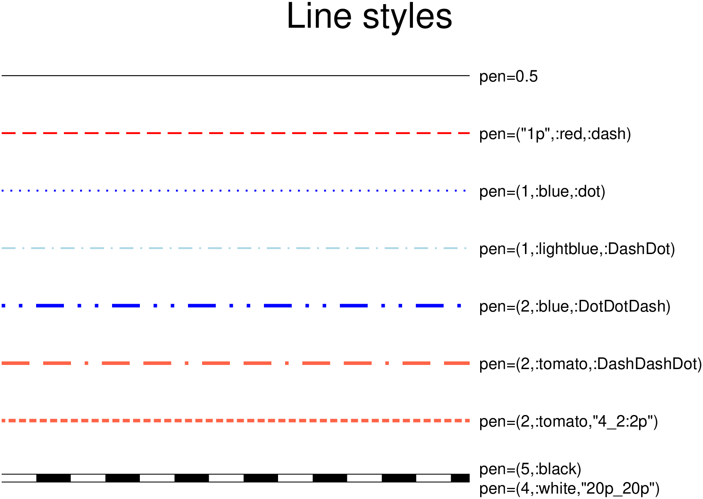

using GMT
ls = ["pen=0.5", # default (a 0.5 points continuous black line)
"pen=(\"1p\",:red,:dash)", # dashed line
"pen=(1,:blue,:dot)", # dotted line
"pen=(1,:lightblue,:DashDot)", # dash-dotted line
"pen=(2,:blue,:DotDotDash)", # dot-dot-dashed line
"pen=(2,:tomato,:DashDashDot)", # dash-dash-dotted line
"pen=(2,:tomato,\"4_2:2p\")", # A pattern of 4-point-long line segments and 2-point-long gaps between
# segments, with pattern offset by 2 points from the origin
"pen=(5,:black)", # First line of the railway
"pen=(4,:white,\"20p_20p\")"]; # Second line of the railway. Together they make the desired effect
# Helper variable with the above verbose pen settings converted to GMT hard-core syntax
_ls = ["0.5", "1p,red,-", "1p,blue,.", "1p,lightblue,-.", "2p,blue,..-",
"2p,tomato,--.", "2p,tomato,4_2:2p", "5,black", "4p,white,20p_20p"];
# line coordinates
x = [0 7]; y = [9 8 7 6 5 4 3 2 2; 9 8 7 6 5 4 3 2 2];
D = mat2ds(y, x=x, pen=_ls, multi=true); # GMTdataset with all info about the lines
# Plot the lines
plot(D, region=(0,11,1,9.5), title="Line styles", frame=:none)
# Plot all texts but the one referring to last line that must be broken in two tokens
for k = 1:length(ls)-2
text!(x=x[end], y=y[1,k], text=ls[k], justify=:ML, offset=(0.2,0))
end
text!(x=x[end], y=y[1,end], text=ls[end-1], justify=:ML, offset=(0.2,0.2))
text!(x=x[end], y=y[1,end], text=ls[end], justify=:ML, offset=(0.2,-0.2), show=true)